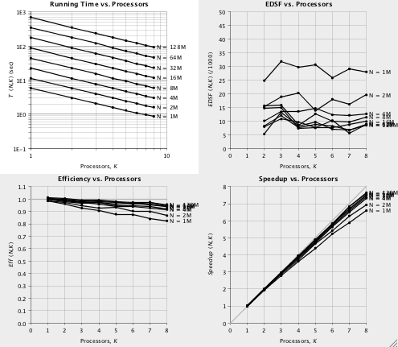

Parallel Java Plots model element
PJPlots can store data measurements about runs of a parallel algorithm and display plots of the Speedup or Sizeup metrics
The metrics are defined in the book Building Parallel Java
by Alan Kaminsky and look like shown in the Speedup and
Sizeup documentation.

This is an example of a sizeup plot
Usage
Add a PJPlots element to your model, by dragging the icon element to the list of your model elements.
Whenever you have data from a parallel run, add it to the element using the addMeasurement method.
When you think you have enough data, invoke the element's showSpeedupPlot or showSizeupPlot method to display a dialog with the plots.
You can invoke the plotting methods as may times as required. The element will create each time a new plot with the available data.
The element implements the following basic methods:
- boolean addMeasurement(int size, int K, long time): adds the data measurement from a run for the problem size size, with K processors
(K=0 means a sequential run, K>=1 means a parallel program with K processors),
that took time milliseconds to run.
IMPORTANT: You need at least two different values of K for each problem size
- void addPlotSpecification(String plotSpec): add a plot specifications as indicated in Parallel Java's
Speedup and Sizeup class.
The commands apply to any of the plots and do not interfere.
- void clearMeasurements(): clears all previous data measurements.
- void clearPlotSpecifications(): clears all previous plot specifications.
- void clear(): clears all data.
- void printMeasurements(Object output): sorts and prints all data measurements through the given output.
The parameter output can be:
- a Model (e.g. printMeasurements(this);
- a java.io.PrintStream (e.g. printMeasurements(System.err);
- any other object or null, which produces no output.
- JDialog showSpeedupPlot(java.awt.Component parentComponent): creates and shows a JDialog (located relative to the parent component) with the speed up plots.
Returns null if there was any error (typically, when there is not enough data to create the plot)
- JDialog showSizePlot(java.awt.Component parentComponent): creates and shows a JDialog (located relative to the parent component) with the size up plots.
Returns null if there was any error (typically, when there is not enough data to create the plot)
- void disposePlots(): disposes all plot dialogs created previously.
- String runTest (Object target, int nTimes, int maxThreads, Object output): Runs a test of the target program and collect all its data.
It runs the program nTimes sequentially and in parallel up to the indicated maximum number of threads. Returns null if successfull, an error string if there was any error.
The target must implement the following public methods:
- int getSize(): returns the size of the problem
- long runSequential(): runs the problem sequentially and returns the time ellapsed in milliseconds
- long runParallel(int nThreads): runs the problem in parallel using nThreads threads and returns the time ellapsed in milliseconds
The parameter output can be:
- a Model (e.g. printMeasurements(this);
- a java.io.PrintStream (e.g. printMeasurements(System.err);
- any other object or null, which produces no output.
- String runTest (Object target, int nTimes, int maxThreads): Same as runTest (target, nTimes, maxThreads, null).
Example of use
pjPlots.addMeasurement(20,1,1234);
pjPlots.addMeasurement(20,1,1256);
pjPlots.addMeasurement(20,2,700);
pjPlots.addMeasurement(20,2,710);
pjPlots.addPlotSpecification("n 20 1048576 \"N = 1M\"");
pjPlots.addPlotSpecification("time rightMargin 54");
// Do more runs and add their data...
// ...when you are ready:
pjPlots.showSpeedupPlot(_view.mainFrame);
// or
pjPlots.showSizeupPlot(_view.mainFrame);